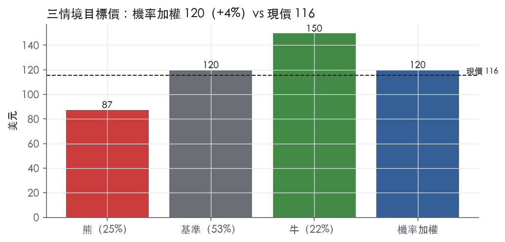
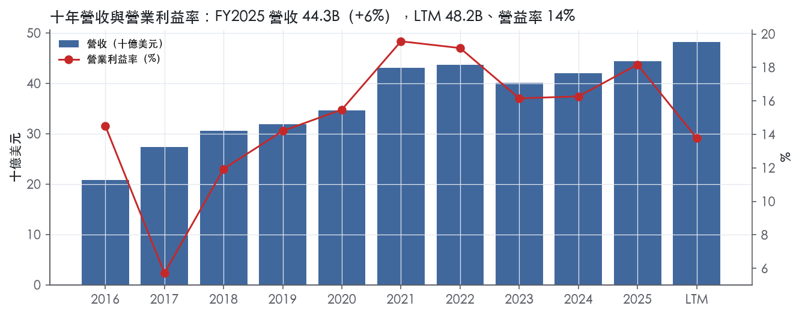
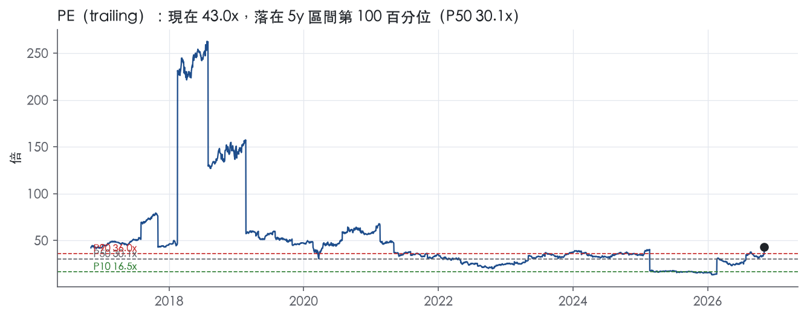
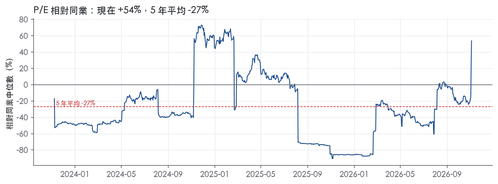
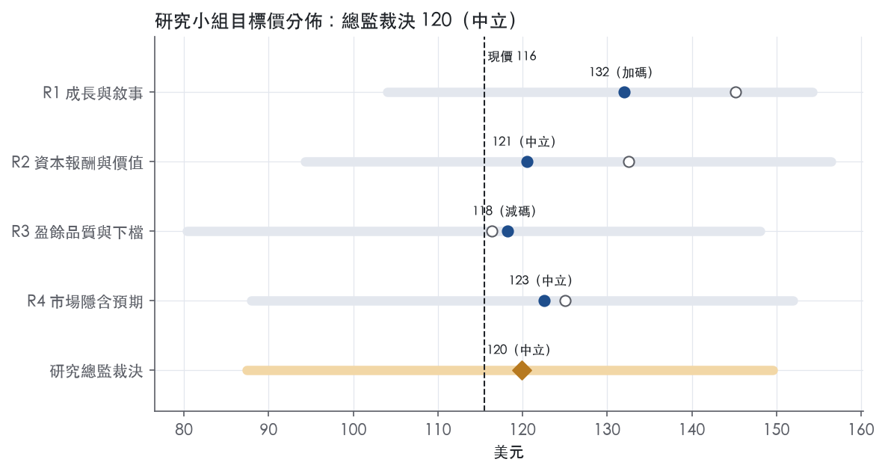
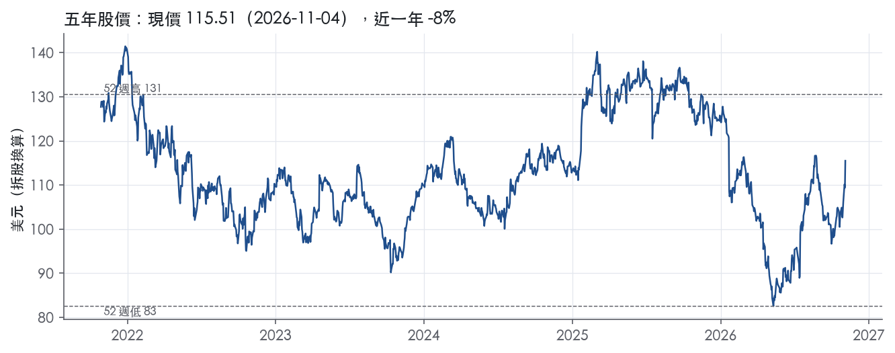

評等總表 › 醫療保健 › ABT
盈餘回升已被定價，倍數給P50，中性｜評等 中立｜目標價 120
| 報告日 | 評等 | 目標價 | 當時股價 | 超額報酬 |
|---|---|---|---|---|
| 2026-11-04 | 中立 | 120 | 116 | -3.9% |
| 2026-10-09 | 中立 | 110 | 99.60 | +2.3% |
| 快評 | 動作 | 結論 |
|---|---|---|
| 2026-10-21 | 提前重開研究小組 | GAAP 獲利低於預測，主因法律和解 |
| 評等 | 中立（邊界，鄰近減碼） |
| 12 個月目標價 | 120 美元 |
| 現價 | 115.51 美元（2026-11-04） |
| 預期報酬 | 股價 +3.8%＋股息 2.2%＝總報酬 +6.0%；同業籃門檻 10.0%，超額 -3.9% |
| 估值方法 | P/E 32.3x，套在第 5–8 季的EPS（也就是一年後的未來四季） |
| 三情境 | 熊 87／基準 120／牛 150 |
| 研究流程 | 四位研究員兩輪辯論＋研究總監裁決 |
| 資料來源 | SEC EDGAR XBRL、Tiingo、FRED（全免費） |
盈餘回升已被定價，倍數給P50，中性（研究總監裁決，四位研究員兩輪辯論後）
評等 中立（邊界，鄰近減碼）｜12 個月目標價 120 美元（總監三情境機率加權 118 與研究員中位數 122 各半）｜現價 115.51（2026-11-04）
預期報酬：股價 +3.8%＋股息 2.2%＝總報酬 +6.0%。同業籃門檻 10.0%，超額 -3.9%，離減碼的分界不到三個百分點，屬邊界評等（落在其他級距的機率約四成）。
估值方法：P/E 32.3x，套在第 5–8 季的EPS（也就是一年後的未來四季）。三情境：熊 87（25%）／基準 120（53%）／牛 150（22%）。
評等說明：研究總監自己的機率加權目標價 118 美元對應「減碼」；與研究員第二輪中位數 122 美元各半後為 120 美元，落入「中立」。兩者只差一級，請把這檔讀成「減碼～中立」，正文裡總監的立場文字以「減碼」寫成。
什麼會讓研究總監改變看法：FY2026Q4 GAAP營益率≥16%且FY2027可比指引中點≥6.5%轉多、倍數上調至前瞻P75 36.5x；10-K顯示過橋展延或FY2027Q2 GAAP營益率<13%轉空、倍數降至前瞻P25 26.6x。
| 過去四季（實際，FY2026Q3） | 未來四季 | 第 5–8 季 | 第 9–12 季 | |
|---|---|---|---|---|
| 營收（B） | 48.2B | 53.1B | 56.5B | 59.9B |
| 營收成長 | 10.0% | 10.0% | 6.5% | 6.0% |
| 營業利益率 | 13.8% | 14.0% | 15.0% | 16.0% |
| EPS（美元） | 2.69 | 3.18 | 3.71 | 4.28 |
| EPS 成長 | -66.4% | 18.5% | 16.6% | 15.2% |
| 每股股息（美元） | 2.52 | 2.52 | 2.52 | 2.52 |
| P/E（現價） | 43.0x | 36.3x | 31.1x | 27.0x |
| 股息殖利率（現價） | 2.2% | 2.2% | 2.2% | 2.2% |
過去四季為申報數字；預測為研究總監的假設、程式計算。倍數與殖利率都用現價計算，用來看現價對應各期獲利的高低。
| 項目 | 上次（2026-10-12） | 這次（2026-11-05） | 變動 |
|---|---|---|---|
| 評等 | 中立 | 中立 | ＝ |
| 機率加權目標價（美元） | 110 | 120 | +9.4% |
| 超額報酬 | 2.3% | -3.9% | -6.3 pp |
| 目標倍數 | 30x | 32.3x | — |
| 未來四季營收成長 | 11.0% | 10.0% | -1.0 pp |
| 未來四季營益率 | 14.3% | 14.0% | -0.3 pp |
| 未來四季 EPS（美元） | 3.29 | 3.18 | -3.2% |
| 熊／基準／牛機率 | 18／58／24 | 25／53／22 | — |
程式計算；「未來四季」各自從當次報告的資料起點算。研究總監逐點說明見第八章「與上次報告比較」。
| 情境 | 機率（歷史） | 故事 | 未來四季營收成長 | 第 5–8 季營益率 | 倍數 | 目標價 | 股價漲跌 |
|---|---|---|---|---|---|---|---|
| 熊 | 25%（27%） | 對應風險表第1條（整合延長、20.0B過橋於本行下行利差2.30再融資）與第3條（美元124、關稅壓毛利），血液篩檢侵蝕Cologuard，GAAP營益率停在併購後三季平均附近，倍數落到前瞻P25 26.6x與同業中位數28.0x之間 | 9.0% | 13.2% | 28.0x | 87 | -24.3% |
| 基準 | 53%（53%） | Exact併表撐NTM 10%、有機6.5%；交易與整合費用2027年退場、攤銷與重組留下，Q5–Q8 GAAP營益率15%，市場對回升後的EPS付前瞻帶P50 | 10.0% | 15.0% | 32.3x | 120 | 3.8% |
| 牛 | 22%（21%） | 整合費用提前退場、有機維持Q3的7%、Cologuard與SimpleScreen雙線、Libre Duo與PFA放量，過橋在本行上行路徑利差1.45再融資，倍數到前瞻P75 36.5x之下 | 10.0% | 16.5% | 36.0x | 150 | 29.5% |
目標價由程式依研究總監的驅動與倍數計算；機率由研究總監給定。括號內是歷史頻率：把這檔股票過去十年 12 個月報酬的波動形狀，置中在基準情境，結果落在各情境附近的比例。

四位研究員用不同方法各自估值，回應研究總監的質疑後交出第二輪，最後由總監逐點裁決。各研究員的主張見第七章，裁決理由見第八章，完整論證見《研究底稿》。
| 立場（一輪→二輪） | 加權目標價（一輪→二輪） | 評等（一輪→二輪） | 第二輪倍數 | 熊～牛目標價 | |
|---|---|---|---|---|---|
| R1 成長與敘事 | 看多→看多 | 145→132 | 買進→加碼 | 21.0x | 104～154 |
| R2 資本報酬與價值 | 中性→中性 | 133→121 | 加碼→中立 | 21.0x | 94～156 |
| R3 盈餘品質與下檔 | 中性→看空 | 116→118 | 減碼→減碼 | 33.0x | 80～148 |
| R4 市場隱含預期 | 中性→中性 | 125→123 | 中立→中立 | 32.3x | 88～152 |
| 研究總監裁決 | 中性 | 120 | 中立 | 32.3x | 87～150 |
目標價由程式依各自的驅動與倍數計算；評等＝機率加權總報酬 − 同業籃門檻。
Abbott 是一家四大分部並行的多元化醫療保健公司，靠學名藥、診斷、營養品與醫療器材四條業務線分散風險、互相支撐現金流。公司的核心業務是「discovery, development, manufacture, and sale of a broad and diversified line of healthcare products」¹。客戶端涵蓋醒藥局、醫院、血庫、商業實驗室、診所、零售商、政府機構與一般消費者，依分部與市場不同而異¹。公司沒有單一客戶大到「若流失會對 Abbott 造成重大不利影響」的程度，業務分散度高¹。2025 年 11 月 19 日公司與 Exact Sciences 簽署收購協議，預計藉此打入癌症診斷市場，該交易已於 2026 年 3 月 23 日完成¹²。
Abbott 四大可報告分部為 Established Pharmaceutical Products、Diagnostic Products、Nutritional Products 與 Medical Devices¹。Established Pharmaceuticals 是在美國以外新興市場銷售的學名藥品牌組合，涵蓋胃腸科（Creon）、婦科（Duphaston、Femoston）、心血管代謝（Lipanthyl、TriCor、Synthroid）、疼痛與中樞神經（Brufen）、呼吸道與疫苗及生物相似藥¹。9M26 該分部營收 4,539M 美元（全數來自國際市場），年增 9.3%、可比成長 8.7%，由印度與拉美、亞太多個市場的雙位數成長帶動²。
Diagnostic Products 涵蓋核心實驗室（Alinity、ARCHITECT、Cell-Dyn）、分子診斷（Alinity m）、照護現場（i-STAT）、快速診斷（BinaxNOW、ID NOW）以及資訊化與自動化方案¹。2026 年起公司將原 Rapid Diagnostics、Molecular Diagnostics、Point of Care 三業務合併為 Rapid and Molecular Diagnostics，並因收購 Exact Sciences 新增「Cancer Diagnostics」業務線²。9M26 Diagnostics 總營收 8,577M 美元，年增 32.4%（主要由 Cancer Diagnostics 併入貢獻），其中 Core Laboratory 4,128M、Cancer Diagnostics 1,983M、Rapid/Molecular 2,466M²；Cancer Diagnostics 可比成長達 13.5%，由 Cologuard 帶動，Rapid/Molecular 可比反而下滑 5.4%²。
Nutritional Products 分為兒科（Similac 系列）與成人營養（Ensure、Glucerna、PediaSure、Pedialyte）兩條線，產品賣給消費者、機構、經銷商與零售商¹。9M26 營收 6,423M 美元，年減 1.3%，可比衰退 2.1%，美國市場受 2025Q4 定價調整影響較明顯（-4.5%）²。
Medical Devices 是公司營收規模最大的分部，涵蓋心律管理、電生理、心衰竭、血管、結構性心臟病、神經調控與糖尿病照護／連續血糖監測（FreeStyle Libre）¹。9M26 營收 17,218M 美元，年增 9.6%，可比成長 8.2%，糖尿病照護（Diabetes Care，含 Libre）是最大子業務，9M26 美國市場即貢獻 7,890M 的分部整體營收中相當大部分²。各分部在集團總營收占比：以 9M26 計算，Medical Devices 約佔總營收 36.77B 中的最大部分，Diagnostics 因 Exact Sciences 併入成長最快，Nutrition 唯一呈現衰退。
Abbott 的通路依分部而異：學名藥直銷批發商、經銷商、政府機構、醫療機構、藥局與獨立零售商；診斷產品銷售給血庫、醫院、商業實驗室、診所、零售商與血漿蛋白治療公司；營養品直銷消費者與機構、批發商、零售商；醫療器材在美國主要直銷批發商、醫院、門診手術中心、醫師診所、消費者與經銷商，海外則直銷客戶或透過經銷商¹。地理上美國以外業務佔比高，截至 2025 年底 Abbott 員工約 115,000 人，其中 69% 位於美國以外，反映其全球化布局¹。9M26 總營收地理拆分為美國 14,994M、國際 21,776M，國際市場仍是營收主體²；Established Pharmaceuticals 100% 來自國際市場，是公司地理集中度最高的分部，其「Key Emerging Markets」子類別代表公司認定的長期成長機會所在，9M26 貢獻 3,448M、年增 10.5%²。
過去四季營收成長明顯加速，主因 Exact Sciences 併購（2026 年 3 月 23 日完成）大幅拉高 Diagnostics 的報表口徑成長率，實際經常性業務（可比）成長則相對平穩。FY2025Q4 營收 11.46B，年增 4.4%，毛利率 57.0%，營益率 19.6%（相關資料）。FY2026Q1 營收 11.16B，年增 7.8%，但營益率驟降至 12.0%，反映併購後整合成本與無形資產攤銷壓力（dv 衍生資料）。FY2026Q2 營收 12.59B，報表年增 13.0%，可比成長 4.8%，GAAP 稀釋 EPS 0.53 美元、調整後稀釋 EPS 1.31 美元，公司上調全年調整後 EPS 指引至 5.45–5.60 美元區間³；當季公司以股利及股票回購方式回饋股東 2.1B 美元³。FY2026Q3 營收 13.01B，報表年增 14.5%，可比成長 7.0%，GAAP 稀釋 EPS 0.53 美元、調整後稀釋 EPS 1.42 美元，公司重申並收斂全年調整後 EPS 指引至 5.50–5.55 美元，預期全年可比銷售成長約 6.0%²。整體看，營益率自 2025Q4 的 19.6% 滑落至 2026Q3 的 10.4%，顯示併購後整合成本或一次性費用拖累短期利潤率（is/dv 相關年季資料）。
公司執行長 Robert B. Ford 表示：「Abbott delivered strong third-quarter results, reflecting balanced growth across our portfolio... we are well-positioned to deliver sustainable growth in the years ahead」²。第二季時 Ford 稱：「Our second-quarter results reflect the momentum we are building... We expect this momentum to continue and drive accelerating sales and earnings growth in the second half of the year」³。產品管線方面，公司列舉多項新品核准作為成長動能：Libre Duo 雙重血糖-酮體生物穿戴感測器取得 FDA 核准、Amulet 360 左心耳封堵器取得歐盟 CE 認證、TactiFlex Duo 脈衝場消融導管取得 FDA 核准、SimpleScreen CRC 血液型大腸癌篩檢測試取得 FDA 核准上市²。公司將 Key Emerging Markets（印度、拉美、亞太多國）定位為學名藥業務「最具吸引力的長期成長機會」²。10-K 中公司強調透過專利與商標保護、全球法規遵循投資，以及人才管理留住競爭優勢¹。
就研究判斷而言，Exact Sciences 併購短期內稀釋了合併利潤率，但為公司打開癌症診斷這一高成長賽道，屬於策略性加分項。Medical Devices 分部中的糖尿病照護（Libre 系列）與電生理（PFA 相關新品）是目前成長最快、也最受市場關注的次產品線，是公司未來兩年敘事的核心。Nutrition 分部在美國定價調整後出現的衰退需觀察能否在後續季度回穩，是短期內業務概況中相對的弱點。

Abbott 的競爭優勢來自品牌、法規授權與診斷儀器裝機帶來的轉換成本，這些優勢在營運層面真實存在；但十年 ROIC 只比資本成本高一點，加上 Exact Sciences 併購擴大資本基礎，我們只有把握未來 5 年 ROIC 仍高於資本成本，沒有把握到 10 年，因此評為窄護城河，趨勢變窄。
Abbott 的護城河主要來自無形資產與轉換成本兩類，沒有看到網路效應；成本優勢與效率規模也缺乏足夠的原文證據，所以不列。
無形資產（品牌、專利、法規授權）：品牌是營養品與學名藥分部的核心資產。學名藥分部的行銷重點是「building strong brands with key stakeholders, including consumers, pharmacists, physicians, and other healthcare providers」¹。營養品擁有 Similac、Ensure、Glucerna、PediaSure、Pedialyte 等品牌，糖尿病照護則以 FreeStyle 與 Libre 為品牌¹。專利方面，公司表示商標與「various patents that expire during the period from 2026 to 2046, in the aggregate, are believed to be of material importance」¹。不過公司同時承認「no single patent, license, or trademark is material in relation to Abbott’s business as a whole」，所以專利保護是分散的組合，任何單一產品都可能被技術追上¹。法規門檻也構成授權型壁壘：法規「substantially increase the time, difficulty, and costs incurred in developing, obtaining and maintaining approval to market」¹。這項門檻對已取得核准、且有能力負擔合規成本的現有廠商有利。
轉換成本：轉換成本主要出現在診斷與醫療器材分部。診斷分部提供 Alinity、ARCHITECT 等核心實驗室儀器，並搭配 GLP systems Track、AlinIQ 等實驗室自動化與資訊系統¹。儀器裝機之後，試劑耗材的消耗會跟著鎖定，加上自動化流程已嵌入實驗室作業，客戶更換供應商的成本高。診斷與器材兩個分部都把「long-term supply contracts」列為競爭要素¹。
數字只能部分支持我們的主張：毛利率非常穩定，但 ROIC 對資本成本的超額報酬很薄，這是不給寬評級的主要原因。
十年毛利率平均 56.5%、標準差 1.2%，最低 54.7%、最高 58.5%。這和品牌與耗材型定價力一致，產品層面的定價能力看得到。
ROIC 十年平均 11.0%、標準差 4.2%，最低 2.8%。資本成本代理值為 10.0%，ROIC 平均只高出 1.0%，有資料的 9 年中僅 6 年高於資本成本。這和寬護城河的要求有衝突：寬護城河應該看到 ROIC 長期、穩定地高於資本成本。營業利益率十年標準差 3.8%、最低 5.7%，波動也偏大。
我們把衝突歸因於兩點：
撇開這兩點，FY2021 到 FY2025 的 ROIC 分別為 16.5%、16.1%、12.5%、13.7%、11.3%（–FY2025），每年都高於資本成本，所以我們維持窄評級，沒有降到無。但同一段期間 ROIC 逐年走低，是評級不能上調的原因。
侵蝕護城河的最大因素是資本報酬被併購稀釋，其次是技術汰換與支付端壓價。
併購稀釋資本報酬：總債務從 FY2025Q4 的 12.93B跳到 FY2026Q1 的 34.05B。FY2026Q3 單季營益率只有 10.4%。資本基礎擴大而利潤率下滑，未來兩三年的 ROIC 有跌破資本成本的風險。
技術汰換：診斷與器材分部的原文都寫明「Although Abbott has benefited from technological advantages of certain of its current products, these advantages may be reduced or eliminated as competitors introduce new products」¹。兩個分部的部分產品也「can be subject to rapid product obsolescence or regulatory changes」¹。
品牌被替代：學名藥分部面臨「the substitution of generic drugs for the brand prescribed」的壓力¹。營養品方面，「private label and local manufacturers’ products may increase competitive pressure」¹。
支付端壓價：Medicare 對包含糖尿病產品在內的耐用醫療設備與腸道營養品實施競標制度¹。WIC 規定各州透過競標向嬰兒配方奶製造商取得折讓¹。公司預期支付方預算壓力會「heighten the scope and severity of pricing pressures on Abbott’s products for the foreseeable future」¹。這些制度直接削弱 Libre 與 Similac 的品牌溢價。
目標倍數應與同業持平，不給溢價：窄護城河加上 ROIC 只比資本成本高 1.0%，撐不起長期高於同業的倍數，而且併購後的資本報酬還在變差。目前 trailing P/E 43.0x（資料包快照），已高於 5 年 P90 的 36.0x，主要反映 GAAP EPS 被併購費用壓低；估值研究員應以 EV/Sales 或 EV/EBITA 為主要錨點，避免把 GAAP P/E 的高位誤讀為護城河溢價。若 Exact Sciences 整合後 ROIC 能回到過去五年的水準，才有理由重新討論溢價。
| 指標 | 最新 | 十年平均 | 標準差 | 最低 | 最高 |
|---|---|---|---|---|---|
| ROIC | 11.3% | 11.0% | 4.2% | 2.8% | 16.5% |
| 毛利率 | 56.4% | 56.5% | 1.2% | 54.7% | 58.5% |
| 營業利益率 | 18.2% | 15.1% | 3.8% | 5.7% | 19.6% |
| FCF 利潤率 | 16.7% | 15.5% | 2.7% | 10.0% | 20.1% |
| ROE | 13.1% | 15.0% | 7.8% | 1.9% | 31.1% |
程式計算。資本成本代理值（10 年債＋5%）：10.0%；ROIC 平均減資本成本：1.0%；ROIC 有資料的 9 年中，高於資本成本 6 年。
量化底稿顯示現金轉換指標全線綠燈（CFO/NI、FCF/NI、應計比率十年與LTM都優於門檻），盈餘本身沒有「紙上富貴」問題；但程式標出的兩個淨利率跳動紅旗加上FY2026因收購Exact Sciences新增約20B美元借款（10-K Item 1A），使淨負債/EBITDA與利息保障同時轉黃，這是「真實但可解釋」的風險，不是做假帳，但足以讓估值師對GAAP盈餘打折、改用調整後或營運現金流衡量。
跟上，而且跟得很穩。LTM營業現金流/淨利1.88x、FCF/淨利1.44x，均優於綠燈門檻（≥1.00x、≥0.90x），十年平均更高達2.63x與2.02x，顯示長期盈餘是現金驅動而非應計堆出來的。應計比率LTM為-3.8%，近三年平均僅0.2%，十年平均-3.3%，全部落在≤0%的綠燈區，代表淨利長期低於或貼近CFO，沒有靠應收帳款或存貨墊高帳面利潤的跡象。唯一要盯的是FY2025應收帳款成長比營收成長快8.8個百分點，觸發黃燈；但同期存貨成長反而落後營收0.9個百分點，加上整體CFO/NI、FCF/NI仍是綠燈，顯示這只是局部營運資本時點差異，不是系統性收入認列提前。
3Q26 GAAP稀釋EPS為0.53美元，調整後（non-GAAP）稀釋EPS為1.42美元，公司註明調整後數字「excludes specified items」²，兩者差距達0.89美元、接近GAAP數字的近3倍，是歷史上少見的大缺口。新聞稿節錄沒有附逐項調整金額的對照表，但從同期資產負債表變化可推：FY2026Q1總債務從12.93B跳到34.05B（資料包8季表），正好對應2026年3月23日完成的Exact Sciences收購（8-K 2026-10-21），加上10-K揭露「Abbott plans to fund the Exact Sciences acquisition with approximately $20 billion of borrowings」⁴，可合理推斷GAAP與調整後EPS的主要缺口來自收購相關的無形資產攤銷與交易/整合費用。這類攤銷是會計科目差異但現金流確實有流出（利息與整合支出），不是純粹紙上加回，估值時不能完全無視。
槓桿因併購明顯上升，但起點很低。10-K揭露「As of December 31, 2025, Abbott's consolidated indebtedness was approximately $12.9 billion」⁴，淨負債/EBITDA十年平均僅1.31x、近三年平均0.58x，FY2025年底淨負債僅3.99B（資料包年度表），資本結構原本保守。但LTM（含FY2026Q1起新增約20B美元借款）淨負債/EBITDA已升至2.54x，落入1.50x–3.00x的黃燈區間，10-K也明言「this increase in Abbott's consolidated indebtedness could have the effect, among other things, of reducing Abbott's flexibility」⁴。股東回饋方面，（股利+回購）/淨利LTM為124.7%、十年平均117.9%，長期超過100%代表公司持續用超過當期淨利的現金回饋股東，但因CFO長期高於淨利（CFO/NI平均2.63x），這更多是「用現金回饋」而非「舉債回饋」。稀釋股數年變動LTM為-0.3%，十年平均2.0%，顯示近年回購確實淨減少股數，稀釋風險可控。
淨利率FY2023→FY2024跳動+18個百分點：淨利從5.72B（FY2023）跳到13.40B（FY2024），EPS由3.26跳到7.64（資料包年度表），但同期EBITDA僅由9.72B小幅升到10.04B（資料包年度表），營業結構沒有對應的改善幅度，顯示這是非營業性一次性項目（如訴訟和解、股權處分或稅項利益）推高淨利，而非經常性獲利能力躍升。提供的10-K Item 7節錄未附上該年度損益明細拆解，無法指出具體科目，但由EBITDA與EPS的脫鉤幅度可確認這不是營運面的真實改善，估值不應把FY2024 EPS當作常態基礎。
淨利率FY2024→FY2025跳動-17個百分點：這是上一個紅旗的鏡像回吐，淨利從13.40B回落到6.52B、EPS由7.64回落到3.72（資料包年度表），同期EBITDA由10.04B升到11.17B（資料包年度表），營業面其實是改善的，淨利下滑單純是FY2024一次性項目消失後的正常化。兩個紅旗合併看，結論是FY2024是異常高點、FY2025才是接近正常軌道的數字，估值基礎應以FY2025與LTM為準，不要用FY2024 EPS做可比假設。
淨負債/EBITDA黃燈（LTM 2.54x vs 3年均0.58x）：真實槓桿上升，源自Exact Sciences收購用約20B美元借款融資⁴，不是口徑假警報，但考量公司過去十年淨負債/EBITDA均值僅1.31x且現金轉換能力強，屬於「可控但要觀察去槓桿速度」的中性風險。
利息保障倍數黃燈（LTM 6.68x vs 3年均12.9x）：同樣是收購新增利息支出的直接結果，營業利益本身並未惡化（FY2025營益率18.2%，資料包年度表），這是槓桿上升的連動效應而非盈餘品質惡化。
應收帳款成長超過營收成長8.8pp（FY2025）：單一年度局部訊號，存貨未同步惡化（-0.9pp）且整體現金轉換仍是綠燈，判定為假警報或短期時點差異，非系統性問題。
估值應以調整後／LTM正常化的營業面數據為主幹，但要把Exact Sciences收購帶來的攤銷與利息成本當作真實經濟成本扣回，不能照單全收1.42美元的調整後EPS。FY2024 GAAP EPS 7.64是異常高點不可外推，FY2025與LTM（EPS 2.69、EBITDA 10.56B，快照）才是合理估值基礎。槓桿從低點上升到2.54x尚未觸及紅燈，暫不須系統性砍倍數，但若去槓桿速度慢於預期、或Exact Sciences整合費用持續侵蝕GAAP與non-GAAP的缺口不收斂，則應對P/E倍數保守看待，目前43.0x trailing P/E已處5年分位99.9%（快照），本身已隱含極高確信度，盈餘品質的不確定性應優先反映在倍數假設而非額外折價盈餘。
| 項目 | LTM | 近三年 | 十年 | 燈號 | 規則 |
|---|---|---|---|---|---|
| 營業現金流／淨利 | 1.88x | 1.12x | 2.63x | 綠 | ≥1.00x 綠、<0.80x 紅 |
| 自由現金流／淨利 | 1.44x | 0.83x | 2.02x | 綠 | ≥0.90x 綠、<0.60x 紅 |
| 應計比率（(淨利−CFO)／平均總資產） | -3.8% | 0.2% | -3.3% | 綠 | ≤0.0% 綠、>5.0% 紅 |
| SBC／營收 | 1.5% | 1.6% | 1.5% | 綠 | ≤3.0% 綠、>8.0% 紅 |
| 淨負債／EBITDA | 2.54x | 0.58x | 1.31x | 黃 | ≤1.50x 綠、>3.00x 紅 |
| 利息保障倍數（營業利益／利息） | 6.68x | 12.9x | 9.93x | 黃 | ≥8.00x 綠、<3.00x 紅 |
| 稀釋股數年變動 | -0.3% | -0.3% | 2.0% | 綠 | ≤0.0% 綠、>3.0% 紅 |
| （股利＋回購）／淨利 | 124.7% | 66.2% | 117.9% | 綠 | ≥50.0% 綠、<0.0% 紅 |
| 應收帳款成長 − 營收成長（FY2025） | +8.8pp | — | — | 黃 | ≤5pp 綠、>15pp 紅 |
| 存貨成長 − 營收成長（FY2025） | -0.9pp | — | — | 綠 | ≤5pp 綠、>15pp 紅 |
程式計算；燈號以 LTM（無則近三年平均）判定。
| 風險 | 觸發指標（看什麼數字、在哪裡看） | 對 EPS 的影響方向與粗略幅度 | 未來 12 個月發生機率（高／中／低） | 出處 |
|---|---|---|---|---|
| Exact Sciences 整合執行／財務槓桿風險 | 總債務（FY2026Q3 已達 31.16B，較 FY2025Q4 的 12.93B 大增）、營益率（FY2026Q3 僅 10.4%，較 FY2025Q4 的 19.6% 腰斬）、364 天過橋貸款 20.0B 到期日 | 負向，大：營益率已實質壓縮近半 | 高 | ²⁵【量化底稿】 |
| IRS 與海外稅務爭議（多筆 SNOD + 馬來西亞資本利得稅） | 美國稅務法院訴訟進度、馬來西亞上訴法院裁決（2026 年 10 月初審已敗訴）、Pillar 2 最低稅立法進展 | 負向，中：單一爭議金額落在 192M–443M 美元區間，馬來西亞為 413M 美元 | 中 | 10-K 年報 FY2025 Item 7（管理層討論與分析） |
| 關稅與外匯造成的毛利率壓力 | 毛利率季度變化（FY2025 56.4% vs FY2026 各季在 56–58% 間波動）、COGS 中關稅相關費用揭露 | 負向，中：10-K 明確點名關稅是毛利率逆風之一 | 中 | 10-K 年報 FY2025 Item 7（管理層討論與分析） |
| Nutrition 分部美國定價疲弱、營收衰退 | 美國市場可比銷售成長率（9M26 美國 Nutrition -4.5%、Adult Nutrition 美國 -4.0%）、季度營收年增率 | 負向，小：單一分部，9M26 總營收衰退 -1.3% | 中 | 8-K 財報新聞稿（2026-10-21） |
| 利率環境與再融資風險 | 10 年期美債利率（現為 4.95%）、過橋貸款轉為長期融資的利率條件、長期債到期時程（2026 年到期 3.0B） | 負向，中：債務規模已達 31.16B，利率敏感度隨槓桿上升而放大 | 中 | ⁵【量化底稿】 |
Exact Sciences 整合執行／財務槓桿風險是目前最大的單一風險。公司為完成約 21B 美元股權對價、23B 美元企業價值的收購，取得最高 20.0B 美元的 364 天過橋貸款，計劃以現金及借款融資⁶。資料顯示整合已經在拖累帳面利潤率：FY2026Q1 營益率驟降至 12.0%，FY2026Q2 為 13.4%，FY2026Q3 進一步降至 10.4%，相較 FY2025Q4 的 19.6% 已近乎腰斬【量化底稿】。同期總債務從 FY2025Q4 的 12.93B 美元暴增至 FY2026Q3 的 31.16B 美元【量化底稿】。這個缺口若持續存在，表示收購後的攤銷、整合成本或協同效益不如預期，是會直接動到 EPS 與估值倍數的核心變數。
稅務爭議金額具體且多頭並進。IRS 已針對 2017–2020 四個年度發出 SNOD，爭議金額分別為 192M、417M、443M 美元（2020 年度另涉及 440M 美元的扣除項爭議），公司已向美國稅務法院提出申訴，雙方仍在積極協商⁶。馬來西亞稅局則就 2023 年度子公司股權內部轉讓課徵資本利得稅，金額 413M 美元，檳城高等法院已在 2025 年 10 月維持原裁決，公司已上訴馬來西亞上訴法院⁶。這些爭議單筆金額都在百萬美元三位數以上，一旦任何一筆判決不利，將以一次性稅費認列方式衝擊當期淨利，過去 FY2025 已出現「約 610 million 美元」與遞延稅資產相關的非現金稅費認列前例，顯示稅務不確定性確實會落到報表上⁶。
關稅與外匯是公司自己點名的毛利率逆風。10-K 明確指出 2025 年毛利率上升「partially offset by higher costs, including tariffs, and the unfavorable impact of foreign exchange」⁶。公司海外營收占比高（9M26 國際營收 21.78B 對美國 14.99B），任何關稅政策變化或美元走強都會直接侵蝕毛利率²。
Nutrition 分部美國市場的定價調整效果尚未止穩。9M26 美國 Nutrition 營收年減 4.5%，Adult Nutrition 美國子類更減 4.0%，公司將此歸因於 2025Q4 的定價調整²。雖然單一分部占總營收比重不算最大，但這是四大分部中唯一呈現可比衰退的業務，值得持續監測能否回穩。
利率環境放大再融資風險。目前 10 年期美債利率 4.95%，處於相對高位。公司長期債務在 2025 年底的平均利率為 3.8%，公允價值 12.8B 美元⁵，但在收購後總債務已增至 31.16B 美元，過橋貸款最終需轉為長期融資，若在高利率環境下定價，將直接推升利息費用、壓縮淨利【量化底稿】。
GLP-1 類藥物對糖尿病照護（Diabetes Care，含 Libre 系列）業務的長期結構性替代風險。Diabetes Care 是 Medical Devices 分部中規模最大的子業務（9M26 美國營收占該分部美國總營收 7,890M 的相當大部分），若 GLP-1 藥物大幅降低糖尿病及肥胖人群對連續血糖監測的需求，將侵蝕公司成長最快的次產品線之一，但 10-K 風險章節完全未觸及此議題。
Rapid/Molecular Diagnostics 子業務的結構性下滑未被充分揭露。9M26 該子業務美國營收年減 8.9%，是 Diagnostics 分部中唯一衰退的子類別，且與新冠檢測需求消退直接相關（COVID-19 檢測營收已從 2023 年 1.6B 美元降至 2025 年僅 297M 美元）⁶；若此下滑趨勢在後測試週期持續，可能持續拖累 Diagnostics 分部的可比成長率，但公司並未將此列為獨立風險因子。
現價 115.51 對應 trailing（過去四季）P/E 43.0x、EV/EBITDA 21.5x、EV/EBITA 25.2x、EV/Sales 4.7x、FCF 殖利率 3.4%。主要估值倍數 P/E 現在 43.0x，落在5 年區間第 100 百分位（P10／P50／P90 = 16.5x／30.1x／36.0x）。

把程式的機械基準預測放到現價下，市場付的前瞻倍數是：P/E（未來四季） 37.4x、P/E（第 5–8 季） 34.3x。反推 DCF 顯示市價隱含未來五年營收年成長 13.0%（WACC 9.0%、終值成長 3.0%、FCF 利潤率 15.6%，SBC 不加回）。
| 倍數 | 現在 | 5 年 P10 | 5 年 P50 | 5 年 P90 | 現在分位 | 全期 P50 |
|---|---|---|---|---|---|---|
| P/E | 43.0x | 16.5x | 30.1x | 36.0x | 99.9% | 36.6x |
| EV/EBITDA | 21.6x | 15.4x | 19.8x | 22.6x | 78.8% | 21.4x |
| EV/EBITA | 25.3x | 17.3x | 22.8x | 26.0x | 82.4% | 24.9x |
| EV/EBIT | 34.2x | 21.2x | 29.1x | 33.5x | 95.0% | 32.0x |
| EV/Sales | 4.7x | 4.2x | 4.8x | 5.6x | 44.0% | 4.9x |
| P/S | 4.2x | 3.9x | 4.6x | 5.4x | 21.7% | 4.6x |
| P/FCF | 29.7x | 22.0x | 28.7x | 37.4x | 51.1% | 30.3x |
trailing 倍數（股價 ÷ 過去四季）；分位以每個交易日計算。
同業籃：ABBV, ALNY, AMRX, ALKS, ACAD, ANIP（SIC 2834 同業 57 家中，CY2025 營收最接近的 6 家）。評等門檻 10.0%：同業「倍數不變下持有一年」的隱含報酬中位數（＝ FCF 殖利率 ×(1＋g)＋g，g 為 5 年營收年複合成長並夾在 −2%～8%），每家夾在 0～15%、P/E 低於 5 倍視為資料可疑而排除，中位數再限制在 10 年債到 10 年債＋5% 之間（同業原始中位數 10.4%）；排除：ALNY（隱含報酬算不出來）。
| 代號 | 市值 | 5 年營收 CAGR | 營益率 | ROIC | P/E | 5 年 P/E 中位數 | EV/EBITDA | P/FCF | 隱含報酬 |
|---|---|---|---|---|---|---|---|---|---|
| ABT | 200.1B | 5.1% | 13.8% | 11.3% | 43.0x | 30.1x | 21.5x | 29.6x | 8.6% |
| ABBV | 522.4B | 6.0% | 32.2% | 15.8% | 50.7x | 51.3x | 20.5x | 27.7x | 9.8% |
| ALNY | 21.6B | 49.8% | — | — | — | — | — | — | — |
| AMRX | 6.5B | 8.7% | 14.6% | 16.5% | 40.9x | — | — | 51.2x | 10.1% |
| ALKS | 7.7B | 7.3% | 3.7% | 18.8% | — | — | 58.3x | 33.9x | 10.4% |
| ACAD | 3.7B | 19.4% | 7.6% | 54.5% | 9.6x | — | 27.8x | 25.4x | 12.3% |
| ANIP | 1.6B | 33.5% | 15.4% | 15.9% | 15.1x | — | 6.4x | 9.1x | 19.9% |
| 同業中位數 | 14.0% | 14.6% | 16.5% | 28.0x | 51.3x | 24.2x | 27.7x | 10.0% |
全部 trailing，程式以各公司 SEC XBRL 與 Tiingo 行情計算；第一列為本檔。
P/E 相對同業中位數：現在 53.7%，過去 1 年平均 -44.9%、3 年 -26.8%、5 年 -26.8%；EV/EBITDA 相對同業中位數：現在 -11.0%，過去 1 年平均 0.2%、3 年 33.8%、5 年 23.4%。

事後實現前瞻倍數帶（P/E，2018-11-19..2025-11-17）：P10／P50／P90 = 14.5x／32.3x／43.7x。它是每個交易日的股價除以之後四季實際實現的指標；一年後，今天的第 5–8 季正是那時的未來四季，所以這條帶是 12 個月目標價的同口徑倍數。因為用的是事後實際而非當時預期，過去成長超乎預期的公司這條帶會偏低。
程式的機械基準（成長率從過去四季年增率三年收斂到 6%、利潤率持平）用 事後實現前瞻 P/E P50 估值得到 109（-5.6%），市場現行前瞻倍數（現價 ÷ 基準 未來四季指標）一年後持平，套在基準 第 5–8 季指標得到 126。這兩個數字只是參考點，不是本報告的目標價；研究員對這個定價的回應在第七章。
下表是每位研究員第一輪（各自獨立）與第二輪（回應研究總監的質疑後）的結果。目標價全由程式依各自的假設計算。
| 立場（一輪→二輪） | 加權目標價（一輪→二輪） | 評等（一輪→二輪） | 第二輪倍數 | 熊～牛目標價 | |
|---|---|---|---|---|---|
| R1 成長與敘事 | 看多→看多 | 145→132 | 買進→加碼 | 21.0x | 104～154 |
| R2 資本報酬與價值 | 中性→中性 | 133→121 | 加碼→中立 | 21.0x | 94～156 |
| R3 盈餘品質與下檔 | 中性→看空 | 116→118 | 減碼→減碼 | 33.0x | 80～148 |
| R4 市場隱含預期 | 中性→中性 | 125→123 | 中立→中立 | 32.3x | 88～152 |
| 研究總監裁決 | 中性 | 120 | 中立 | 32.3x | 87～150 |
目標價由程式依各自的驅動與倍數計算；評等＝機率加權總報酬 − 同業籃門檻。
分歧度：第一輪 加權目標價 116～145（區間＝現價的 25%）· 倍數 22～33x · 立場 看多×1、中性×3；第二輪 加權目標價 118～132（區間＝現價的 12%）· 倍數 21～33x · 立場 看多×1、中性×2、看空×1。

| 研究員 | 第二輪主張 | 堅持的理由 |
|---|---|---|
| R1 成長與敘事 | 溫和看多，企業價值倍數21x，錨自家十年中位數21.4x。 | Exact攤銷是會計扭曲，他不用P/E當主要估值尺。 |
| R2 資本報酬與價值 | 中性，攤銷前營業利益的企業價值倍數21x，低於五年中位數。 | 併購盈餘還沒轉成現金，第三季自由現金流年減，他不付高倍數。 |
| R3 盈餘品質與下檔 | 相對減碼，P/E 33x，略高於前瞻P/E中位數。 | 整合費用不收斂時，盈餘和倍數會一起下修，他不軟化熊情境。 |
| R4 市場隱含預期 | 中性，P/E 32.3x，等於前瞻P/E中位數。 | 市場把併購成長當成有機成長，隱含13.0%營收成長過高。 |
每位研究員的逐條回應與完整論證見《研究底稿》（ABT_研究底稿_2026-11-05.docx）。
| 分歧點 | R1 | R2 | R3 | R4 | 什麼資料會分出勝負 |
|---|---|---|---|---|---|
| 主尺與倍數錨（multiple） | 21x EBITDA@ntm，錨 10y P50 21.4x，攤銷是分母假象 | 21x EBITA@ntm，壓在 5y P50 之下：槓桿 2.54x、Q3 FCF 年減 | 33x EPS@q5_q8，前瞻 P50 略上 | 32.3x EPS@q5_q8，＝前瞻 P50 | FY2026 10-K（2027-02）的 Exact 攤銷金額與 specified items 對照表；過橋轉長債的利率 |
| 營益率路徑（op_margin_y1／y2） | 13.0／15.5% | 14.0／16.0% | 13.0／15.0%，攤銷與重組留下 | 14.0／15.5%（乾淨 14.5／16.0 扣 0.5pp 利息） | FY2026Q4 GAAP 營益率（2027-01）：≥14.5% 支持 R4，<13% 支持 R1／R3；FY2027Q2 是否 ≥15% |
| 營收成長（rev_growth_y1／y2） | 10.0／6.5% | 9.5／6.0% | 9.5／6.0% | 10.5／7.0% | FY2027 可比成長指引（2027-01）：中點 ≥6.5% 支持 R4，≤6.0% 支持 R2／R3 |
| 熊情境深度與機率 | 104（27%）17.5x | 94（31%）18x | 80（20%）27x、停止買回 | 88（26%）28x | FY2026Q4 FCF 對前一年同季 2.63B；10-K 過橋是否已轉長債 |
1. 倍數：選 R4，32.3x eps@q5_q8。 主尺依劇本與上次報告。R1 的 EBITDA 尺把 Exact 攤銷排除，但攤銷在 GAAP 永久留下；他在 G2 自承扣掉攤銷與利息後「剩下的是倍數本身偏高」——R4 用 32.3x 配相近的營益率路徑（Q5–Q8 15.5%）得 126，R1 得 136（第二輪程式結果），差額就是倍數。R2 把 EBITA 倍數壓到相對市場持平 −17%（檢查表），依據是 Q3 單季 FCF 1.22B 低於去年同季 2.29B；但十年 CFO／淨利 2.63x、LTM 1.88x（財務體質章）說明現金轉換是結構性的，而這一季又與快評認定的法律和解同期，一季證據搬不動整條帶。R3 與 R4 只差 0.7x，R4 的錨較乾淨：攤銷使 GAAP EPS 偏低（＋）與 trailing EV/EBITDA 21.6x 已在 5 年帶 78.8% 分位（−）相抵，落在 P50。R4 的 E2 仍把 10 年期 4.98% 列為不加價的理由之一，依第 7 條剔除；拿掉後 P50 仍成立。
2. 營益率：Q5–Q8 選 R3 的 15.0%、Q9–Q12 16.0%；NTM 選 R4 的 14.0%。 (a) 紀錄：R3 營業利益絕對誤差中位數 8.1% 最低、偏誤 −0.4%；R4 偏高 +2.0%；R2 給最高的 16.0%，自己卻是系統性偏低者（−2.1%）。(b) 留下的永久項目——Exact 無形資產攤銷、Exact 本身偏低的利潤率、按 FY2025 水準 274M 的重組費用【R3 引 10-K Restructurings】——使 GAAP 營益率回不到 FY2025 的 18.2%；R3 把退場與留下的項目分開寫，R2／R4 的 16.0% 沒有這個拆解。(c) 整合費用以交割後 12–18 個月退場估，退場點正好是 Q5–Q8 起點，15.0% 是「大部分退場、未全部退場」。NTM 取 14.0%：R3 自己寫「Q3 下滑若是單筆事件，上修到 14% 以上」，而 2026-10-21 財報快評認定 Q3 GAAP 低於預測主因法律和解，這是研究員沒看到的證據；R4 用 0.5pp 讓出模型的利息低估（利息按 LTM 持平，LTM 只含約兩季新債，12.93B→FY2026Q1 34.05B），是合理的模型修正，採用。R1／R3 的 13.0% 等於把 Q3 的 10.4%當常態，與快評不符。
3. 營收：選 R1，NTM 10.0%、Q5–Q8 6.5%。 Exact 2026-03-23 交割，FY2026Q4 與 FY2027Q1 仍有完整併購增量，Q3 報表 14.5% 對可比 7.0%²就是增量幅度。Q5–Q8 全為有機：Q3 四個分部同時轉正——Nutrition 可比 +4.9%（9M −2.1%）、Rapid/Molecular +0.9%（9M −5.4%）²，拖累正在翻過基期，R2／R3 的 6.0% 沒給這個轉折任何權重；但全年可比指引約 6.0%、Core Lab 9M 僅 4.0%，R4 的 7.0% 是把單季高點外推。R1 營收紀錄最好（勝過基準 62%），四人營收偏誤都略偏低（−0.2 至 −0.5%），支持往上取。Q9–Q12 留基準 6.0%。
4. 熊情境：選 R4 的形狀，機率依歷史。 R4 的熊：GAAP 營益率卡在併購後三季平均附近（12.2→13.7%）、有機降到 5%、過橋在本行下行路徑利差 2.30 再融資、倍數 28x（前瞻 P25 26.6x 與同業中位數 28.0x 之間）。不取 R3 的 80：NTM 成長 8.0% 低於 Exact 增量本身能撐的水準，再疊 11.5% 營益率與停止買回，是三個下檔同時發生；R1／R2 的熊在 EV 尺上，與主尺口徑不同。
漂移與總經。 R1 向中位數靠攏 65%，但五條接受都附新證據（他第一輪沒有自家 EV/EBITDA 帶；G4 反而把牛拉高、離中位數更遠），不退回；R2 靠攏 40%、依據轉發的財務體質章；R3、R4 幾乎未動。drift_rejections 為空。四人 macro_deviations 皆空，接受；本報告以本行前提為準（10 年期 4.98、美元 121.3、利差 1.75）。
市場反推 DCF 隱含五年營收成長 13.0%，是把 Exact 併表的報表成長當成有機成長，這是市場錯最大的地方，FY2027Q2 Exact 進入比較基期後會現形；市場同時在 37.4x 持平倍數上鎖住 13.8% 的營益率，低估了整合費用退場後的 GAAP EPS。兩者相抵，我們的 Q5–Q8 EPS 高於基準模型、倍數低於市場持平，差距主要在倍數。立場中性，程式評等預期落在中立與減碼交界：若為減碼，是相對製藥／生技小型股同業籃 10% 門檻（ANIP 19.9%、ACAD 12.3%）的相對評等，不是絕對看空——基準情境有正報酬、股息率 2.2%、牛熊距離接近對稱，而且缺口小於研究總監營業利益絕對誤差中位數 9.6%（預測紀錄），落在單一驅動的誤差之內，不足以表態看空。
現價 115.51 → 點估目標價 120 → 機率加權目標價 118 → 目標價 120，差距拆成五段：成長順延 +11 美元（市場現行倍數 37.4x 一年後持平、獲利照機械基準）；倍數差 -17 美元（總監倍數 32.3x vs 市場持平倍數 37.4x，同一機械基準預測）；盈餘差 +11 美元（總監預測的第 5–8 季EPS 0.0B vs 機械基準 0.0B，同一倍數）；情境不對稱 -2 美元（機率加權減點估）；研究小組平均 +2 美元（總監機率加權 118 與研究員第二輪中位數 122 各半）。各段相加等於目標價減現價。本階段未接賣方共識，差距以市場隱含預期為對照。
| 驅動 | 機械基準 | 研究總監 | 差異 |
|---|---|---|---|
| 未來四季營收成長 | 8.7% | 10.0% | +1.3 pp |
| 第 5–8 季營收成長 | 7.3% | 6.5% | -0.8 pp |
| 第 9–12 季營收成長 | 6.0% | 6.0% | ＝ |
| 未來四季營益率 | 13.8% | 14.0% | +0.2 pp |
| 第 5–8 季營益率 | 13.8% | 15.0% | +1.2 pp |
| 第 9–12 季營益率 | 13.8% | 16.0% | +2.2 pp |
| D&A／營收 | 8.1% | 8.1% | ＝ |
| 資本支出／營收 | 4.3% | 4.3% | ＝ |
| SBC／營收 | 1.5% | 1.5% | ＝ |
| 稅率 | 14.1% | 14.1% | ＝ |
| 股數年變動 | -0.7% | -0.3% | +0.3 pp |
研究總監只寫偏移，未寫的沿用基準。
| 期 | 營收 | 成長 | 營益率 | 營業利益 | EBITDA | EBITA | 淨利 | EPS | FCF | 期末淨負債 |
|---|---|---|---|---|---|---|---|---|---|---|
| 未來四季 | 53.1B | 10.0% | 14.0% | 7.4B | 11.7B | 10.0B | 5.5B | 3.18 | 8.3B | 24.4B |
| 第 5–8 季 | 56.5B | 6.5% | 15.0% | 8.5B | 13.1B | 11.2B | 6.4B | 3.71 | 9.4B | 20.9B |
| 第 9–12 季 | 59.9B | 6.0% | 16.0% | 9.6B | 14.4B | 12.5B | 7.4B | 4.28 | 10.5B | 16.2B |
程式依上表的驅動計算；季度用最近四季季節性分攤；不含營運資金變動。
估值方法：P/E 32.3x，套在第 5–8 季的EPS（也就是一年後的未來四季）。研究總監目標倍數的錨：事後實現前瞻P/E帶P50 32.3x（口徑對齊Q5–Q8）；高於trailing 5 年 P50 30.1x因Exact攤銷使GAAP EPS偏保守、無形資產18.1%超過劇本門檻；不高於P50因EV/EBITDA已在5年帶78.8%分位、ROIC 11.3%貼近資本成本、淨負債/EBITDA 2.54x；低於市場持平37.4x因該倍數建立在營益率鎖13.8%的EPS上，差在分母不在利率；不給同業溢折價。
計算：EPS（第 5–8 季） 3.71 × 32.3x → 點估目標價 120（3.8%）；隱含 P/E（未來四季）37.7x、P/E（第 5–8 季）32.3x、EV/EBITDA（第 5–8 季）17.7x、FCF 殖利率（第 5–8 季）4.6%。
總監三情境機率加權目標價 118，研究員第二輪中位數 122，兩者各半＝目標價 120；預期報酬 股價 +3.8%＋股息 2.2%＝總報酬 +6.0%；減評等門檻 10.0%（同業籃隱含報酬中位數（ABBV, ALNY, AMRX, ALKS, ACAD, ANIP））＝超額報酬 -3.9% → 評等 中立（超額 >+15% 買進、+5～+15% 加碼、±5% 中立、−5～−15% 減碼、<−15% 賣出）。同一份資料重開研究小組，超額約有正負四個百分點的雜訊（一個標準差，二十檔實測）；以此估計，評等落在其他級距的機率約四成。超額離減碼的分界不到三個百分點，應視為邊界評等。
| 情境 | 機率 | 未來四季成長 | 第 5–8 季成長 | 第 5–8 季營益率 | EPS（第 5–8 季） | 倍數 | 目標價 |
|---|---|---|---|---|---|---|---|
| 熊 | 25% | 9.0% | 5.0% | 13.2% | 3.12 | 28.0x | 87 |
| 基準 | 53% | 10.0% | 6.5% | 15.0% | 3.71 | 32.3x | 120 |
| 牛 | 22% | 10.0% | 7.0% | 16.5% | 4.16 | 36.0x | 150 |
| 主張 | 驗證日 | 看哪個數字 | 門檻 |
|---|---|---|---|
| FY2026Q4 GAAP營業利益率回到乾淨NTM假設水準 | 2027-02-15 | >=14.5% | |
| FY2027可比銷售成長指引支持有機6.5% | 2027-02-15 | FY2027 comparable sales growth guidance midpoint | >=6.0% |
| 過橋貸款已轉長債且去槓桿持續 | 2027-02-28 | <=30.0B | |
| 整合費用退場後GAAP營益率持續回升 | 2027-07-31 | >=15.0% | |
| Cologuard在血液篩檢競爭下維持雙位數成長 | 2027-11-15 | 3Q27 Cancer Diagnostics comparable sales growth | >=10% |
到期由程式結算（第 5 階段帳本）。
內文上標數字對應下列公司申報文件；未標上標的分析與判斷，是研究小組的觀點。報告中的每個數字都經程式逐一核對資料包或原文。
| 期 | 營收 | 成長 | 毛利率 | 營益率 | EBITDA | 淨利 | EPS | CFO | FCF | ROIC | 淨負債 | 稀釋股數 |
|---|---|---|---|---|---|---|---|---|---|---|---|---|
| FY2016 | 20.9B | — | 56.4% | 14.5% | 4.4B | 1.4B | 0.94 | 3.2B | 2.1B | — | 3.2B | 1.5B |
| FY2017 | 27.4B | 31.3% | 54.7% | 5.7% | 4.6B | 0.5B | 0.27 | 5.6B | 4.4B | 2.8% | 18.3B | 1.7B |
| FY2018 | 30.6B | 11.6% | 58.4% | 11.9% | 6.9B | 2.4B | 1.33 | 6.3B | 4.9B | 6.2% | 15.5B | 1.8B |
| FY2019 | 31.9B | 4.3% | 58.5% | 14.2% | 7.5B | 3.7B | 2.06 | 6.1B | 4.5B | 9.0% | 14.0B | 1.8B |
| FY2020 | 34.6B | 8.5% | 56.6% | 15.5% | 8.7B | 4.5B | 2.50 | 7.9B | 5.7B | 10.8% | 11.6B | 1.8B |
| FY2021 | 43.1B | 24.5% | 57.0% | 19.6% | 12.0B | 7.1B | 3.94 | 10.5B | 8.6B | 16.5% | 7.8B | 1.8B |
| FY2022 | 43.7B | 1.3% | 56.1% | 19.2% | 11.6B | 6.9B | 3.91 | 9.6B | 7.8B | 16.1% | 6.6B | 1.8B |
| FY2023 | 40.1B | -8.1% | 55.2% | 16.2% | 9.7B | 5.7B | 3.26 | 7.3B | 5.1B | 12.5% | 7.4B | 1.7B |
| FY2024 | 42.0B | 4.6% | 55.4% | 16.3% | 10.0B | 13.4B | 7.64 | 8.6B | 6.4B | 13.7% | 6.2B | 1.7B |
| FY2025 | 44.3B | 5.7% | 56.4% | 18.2% | 11.2B | 6.5B | 3.72 | 9.6B | 7.4B | 11.3% | 4.0B | 1.7B |
SEC XBRL；每股數據已依拆股換算到現在股數基準。EBITDA 空白 = 該年無形攤銷在 companyfacts 中缺 tag。
| 期 | 期末 | 推導 | 營收 | 毛利率 | 營益率 | EBITDA | 淨利 | EPS | CFO | FCF | 現金 | 總債務 |
|---|---|---|---|---|---|---|---|---|---|---|---|---|
| FY2023Q4 | 2023-12-31 | Q4 | 10.2B | 55.5% | 17.4% | 2.6B | 1.6B | 0.91 | 3.0B | 2.3B | 6.9B | 14.7B |
| FY2024Q1 | 2024-03-31 | 10.0B | 55.2% | 13.9% | 2.2B | 1.2B | 0.70 | 1.0B | 0.6B | 6.3B | 14.6B | |
| FY2024Q2 | 2024-06-30 | 10.4B | 55.6% | 16.1% | 2.5B | 1.3B | 0.74 | 2.0B | 1.4B | 7.0B | 14.8B | |
| FY2024Q3 | 2024-09-30 | 10.6B | 55.8% | 17.5% | 2.7B | 1.6B | 0.94 | 2.7B | 2.1B | 7.6B | 15.0B | |
| FY2024Q4 | 2024-12-31 | Q4 | 11.0B | 55.0% | 17.4% | 2.7B | 9.2B | 5.28 | 2.9B | 2.1B | 7.6B | 14.1B |
| FY2025Q1 | 2025-03-31 | 10.4B | 56.9% | 16.3% | 2.4B | 1.3B | 0.76 | 1.4B | 0.9B | 6.5B | 13.2B | |
| FY2025Q2 | 2025-06-30 | 11.1B | 56.4% | 18.4% | 2.8B | 1.8B | 1.01 | 2.0B | 1.5B | 7.0B | 13.4B | |
| FY2025Q3 | 2025-09-30 | 11.4B | 55.4% | 18.1% | 2.8B | 1.6B | 0.94 | 2.8B | 2.3B | 7.5B | 12.9B | |
| FY2025Q4 | 2025-12-31 | Q4 | 11.5B | 57.0% | 19.6% | 3.0B | 1.8B | 1.02 | 3.3B | 2.6B | 8.5B | 12.9B |
| FY2026Q1 | 2026-03-31 | 11.2B | 56.2% | 12.0% | 2.1B | 1.1B | 0.61 | 1.3B | 0.9B | 6.8B | 34.0B | |
| FY2026Q2 | 2026-06-30 | 12.6B | 57.7% | 13.4% | 2.8B | 0.9B | 0.53 | 2.5B | 2.0B | 5.1B | 32.6B | |
| FY2026Q3 | 2026-09-30 | 13.0B | 56.8% | 10.4% | 2.6B | 0.9B | 0.53 | 1.7B | 1.2B | 4.1B | 31.2B |
流量項目由 10-Q 的年初至今數拆成單季；Q4 = 年度 − 九個月。

本報告由 equity-desk 多代理系統產出，建置中版本，僅供內部研究與方法驗證，不構成投資建議。所有數字以 datapack.json 為準。